This procedure describes how to remove and install the main blower fan.
Replace the main blower fan when the blower is failing to deliver sufficient cooling air and after all other possible causes are eliminated.
Access the main blower.
Power down the instrument.
Open the lower right front door and remove the six screws that attach the L-shaped cover to the instrument. Remove the cover.
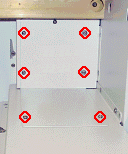
Remove the center rear (gray) cover from the instrument.
Remove panel A, and then remove panels B and C at the lower left rear of the instrument.
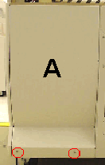
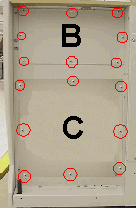
Remove the main blower fan.
Disconnect the blower power connector located at the top of the lower opening.
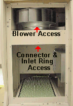
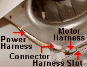
Push the motor harness and connector out of the slot that it passes through.
Note: The slot has a metal cover over it that can be moved downward by loosening two screws on it. This can make removal and insertion of the harness easier.
Remove the four hex nuts securing the blower inlet ring to the blower and then remove it.
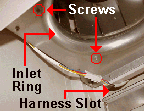
Remove the four socket-head screws that attach the blower bracket to the main baseplate.
The screws are located near and under the right side of the analytical module and pass through the plate to the bracket. Two of the screws are in front of the wash pick-and-place and two are behind it.
Note:
It is not necessary to remove the analytical module or wash P&P to access the screws.
The right-angle hex-wrench works best for removing two of the four bracket screws.
The blower will drop a short distance during this process, but can be held by hand as the bracket screws are removed.
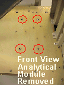
Pull the blower straight out from the back of the instrument.
Remove the four 3-mm screws attaching the mounting bracket to the blower, and then remove the bracket.
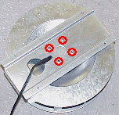
Install the main blower fan.
Place the bracket over the blower and route the power lead.
One screw at a time, apply Loctite 222 to each of the four screws and insert the screw into the mounting bracket. Do not tighten until all the screws are started.
Place the blower assembly into position in the chamber, ensuring that the motor power harness is in or near the grommet that it must pass through (right-side grommet).
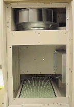
Route the power cable through the grommet, and then push the connector and harness through the top slot below the grommet.
If necessary, the adjustable cover can be lowered to ease routing of the motor harness, and then moved upward and tightened into position after the harness is routed.
Note: Routing the cable is normally done from the back of instrument, but it can be done from the front of the instrument, if necessary.
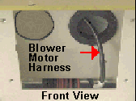
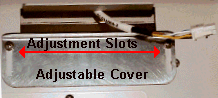
Position the blower mounting bracket as close as possible to the mounting holes in the plate above it.
Insert the four mounting screws into the bracket, and tighten the screws after they are all started.
Note: A small hex wrench or similar tool can also be used to locate and align the plate holes with the mounting bracket holes. Use one hand to hold the motor-bracket assembly and use the other hand to start the two rear screws.
Attach the blower inlet ring.
Reconnect the blower power connector.
Manually spin the squirrel cage to ensure that it rotates without restriction or rubbing.
Replace all the covers.
Verify the proper operation of the blower.
Power on the instrument and verify that the blower is operating.
Monitor all internal temperatures for 30 minutes.
Verify that all temperatures are within specification, especially the reagent storage cooler temperatures.